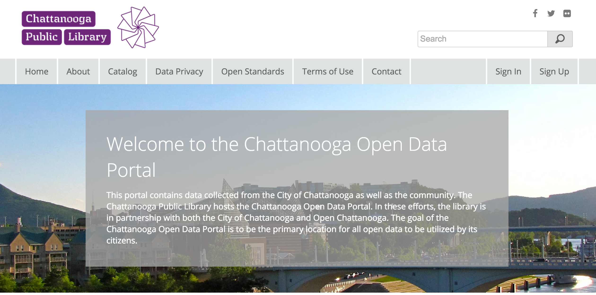

Open Data Ecosystems
and
Libraries
Chattanooga's open data work
started with this guy,
these folks,
and these folks,
with a grant pulling everyone together.

Sean Brewer - Open Data Specialist
3 parts
The City: Reform
The Mayor’s Office will develop and implement strategies to shift City departments and policies toward openness, setting the standard for public information to be easily available to and understandable by citizens.
The Library: Access
The Public Library will create an open data portal, a one-stop-shop for local data to be used by citizens, including developers, designers, journalists, non-profit organizations, and researchers.
The Brigade: Engage
Using the public data opened by the City and hosted on the portal, the Open Chattanooga Brigade- a citizen-led team of creative thinkers, neighborhood advocates, data nerds, designers, developers, and entrepreneurs- will train citizens to create visualizations, apps, and other solutions to address community information needs.
Scope of Collection
- Local Government
- Citizen Science
- Connected Urbanism
Local Government
Organizations, Departments
Citizen Science
Connected Urbanism
Chattanooga
- Facilities
- Programs
- Collections
Facilities
Programs

Issues people really care about.
Collections
Catalog

Working Together
Thank You.